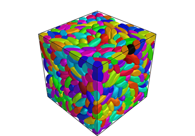
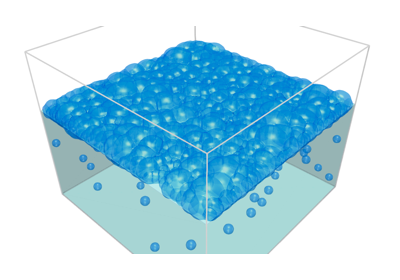
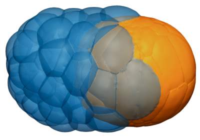
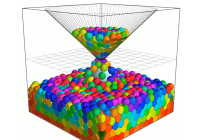
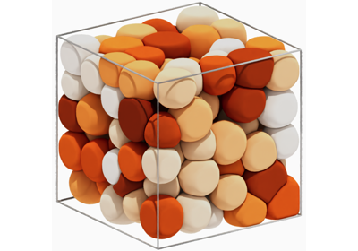
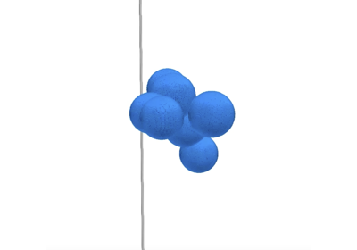

3D examples

Benchmark: 3D Run-and-Tumble with deformations.
Benchmark: 3D Run-and-Tumble with deformations.

Bubbles

Cell sorting in 3D

Falling soft spheres in a 3D hourglass domain
Falling soft spheres in a 3D hourglass domain

Run-and-tumble in 3D with soft spheres
Run-and-tumble in 3D with soft spheres

Growth of a 3D cell aggregate